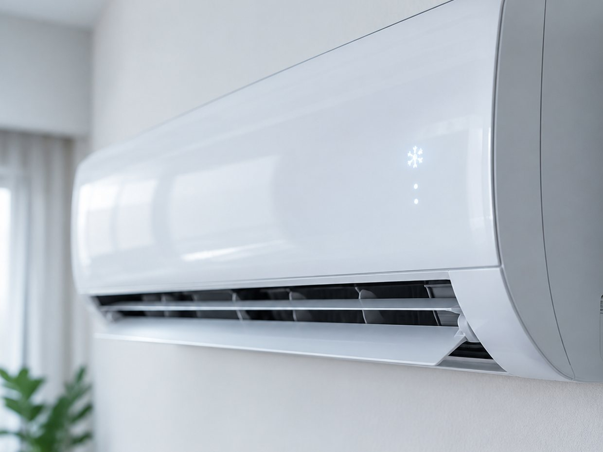
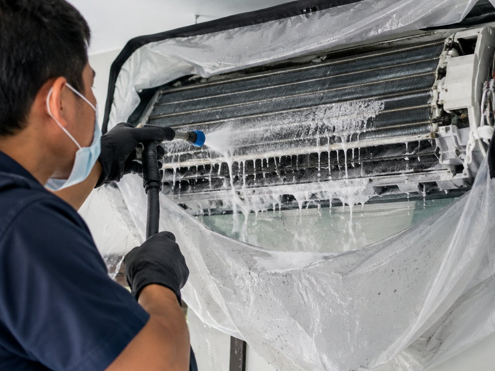
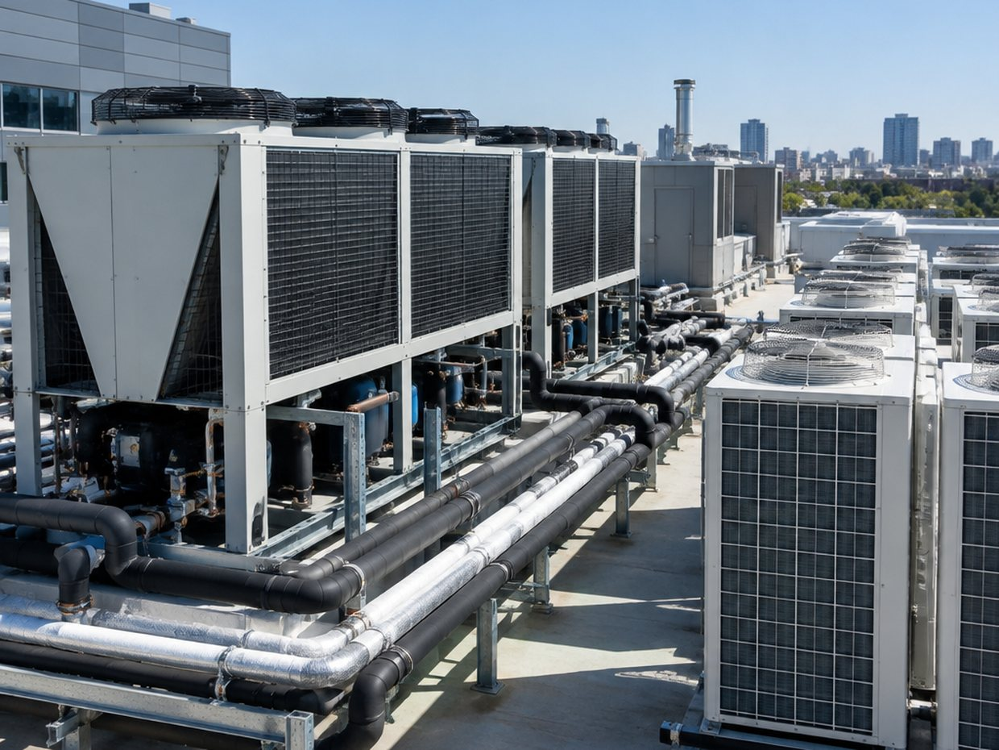
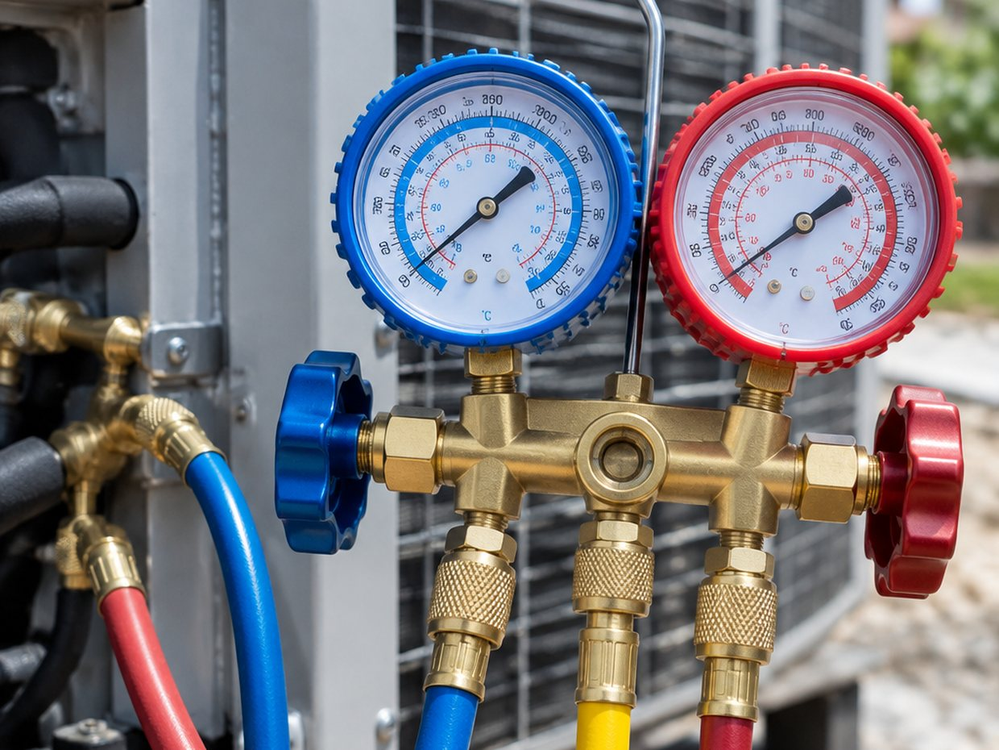

01 · ремонт
Ремонт кондиционеров
Широкая диагностика и устранение поломок и их причин: компрессор, клапаны, конденсаторы, электроника, помпа, дренаж.
ПодробнееРемонт кондиционеров и сплит-систем, фанкойлов, чиллеров и VRF/VRV. Заправка всех видов фреонов, мойка и сервисное обслуживание. Опыт 15 лет.
Выберите симптом — покажем, что обычно за ним стоит и что проверяем. Точный диагноз ставим на объекте.
От бытового сплита в квартире до чиллера и VRF-системы на объекте.

Широкая диагностика и устранение поломок и их причин: компрессор, клапаны, конденсаторы, электроника, помпа, дренаж.
Подробнее
Комплексная мойка и сервисное обслуживание кондиционеров и сплит-систем, перевод на зимний и летний режим.
Подробнее
Фанкойлы, чиллеры, VRF/VRV-системы, пусконаладка холодильного оборудования, камеры и морозильники.
ПодробнееНормальная диагностика, профессиональный инструмент и качественный ремонт стоят своих денег. Дешевле — это не про результат, а про повторный выезд через неделю.
Сложные случаи реально решить без замены дорогого оборудования — и это как раз работа с нормальной диагностикой.
Бытовые системы и промышленное оборудование — на одном уровне, с профильным инструментом.
Сплит-системы в квартирах, домах и небольших офисах
Несколько внутренних блоков на одном наружном
Ремонт, обслуживание, устранение протечек
Запуск, обслуживание, поиск неисправностей
Диагностика и ремонт мультизональных систем
Квартиры и частные дома, коммерция и производство: везде своя специфика и свои требования к срокам.
Помимо самого ремонта — понятный процесс и документы для бухгалтерии.
Опыт 15 лет: кондиционеры, фанкойлы, чиллеры, VRF и холодильное оборудование.
Возможен выезд в день обращения — в сезон это часто решающий момент.
Ищем причину поломки, а не только её последствия. И объясняем, что и почему.
Работаем с частными клиентами и организациями, в том числе по безналу.
Документы для отчётности — сразу, без напоминаний.
Возможен: разбираемся, что было сделано до нас, и доводим до рабочего состояния.
Никаких «примерно»: сначала диагностика, потом стоимость и работа.
Звоните или пишете. Опишите симптом, модель и адрес — договоримся о выезде.
Смотрим оборудование профильным инструментом, находим причину и объясняем её.
Называем точную стоимость после диагностики. Большинство неисправностей устраняем за 1 выезд.
Проверяем работу, выдаём акт выполненных работ. Для организаций — безналичный расчёт.
Манометрический коллектор, мойка внутреннего блока, чиллеры на объекте.

Если вопроса нет в списке — пишите, отвечаем оперативно.
Пишите и звоните — оперативно отвечаем. Опишите симптом: не охлаждает, не включается, течёт, шумит, выдаёт ошибку, обмерзают трубки.
Скажите модель и адрес — подскажем, что можно проверить до приезда.
Опишите, что происходит с кондиционером. Стоимость называем после диагностики — без «примерно» по телефону.
Опишите симптом и адрес — приедем, найдём причину и назовём стоимость. Большинство неисправностей устраняем за один выезд.